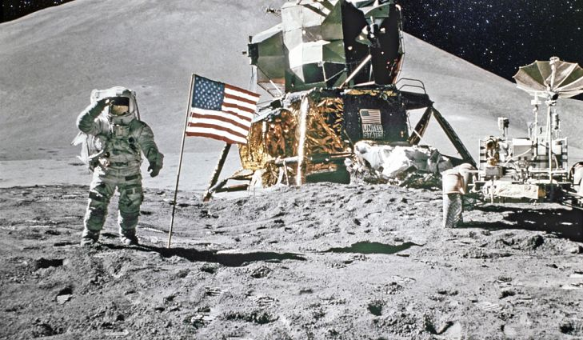
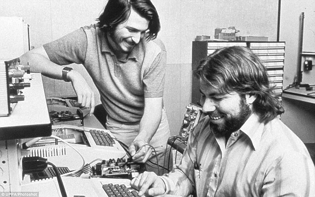
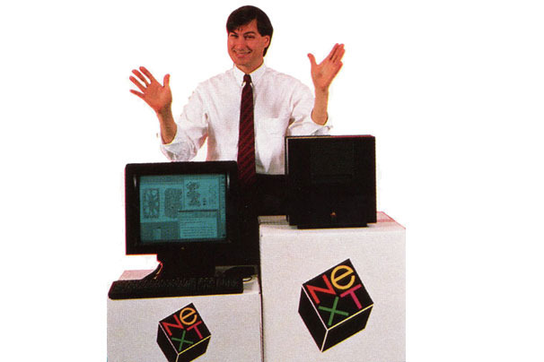
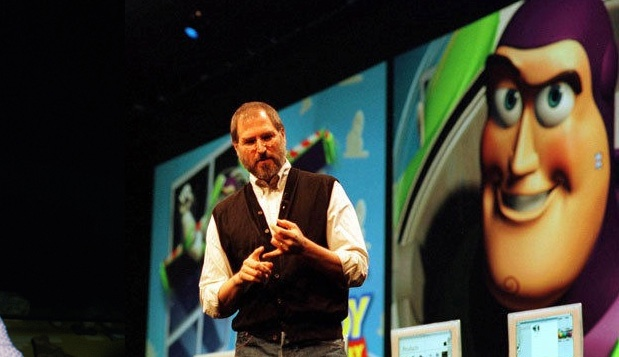

17 de agosto de 1936 (81 anos);
Paoli, Indiana, USA;
Matemática (Universidade de Michigan, 1958), pós graduação em Meteorologia(Instituto de Tecnologia de Massachusetts), Cientista da Computação e Engenheira de Software;
17 de agosto de 1936 (81 anos);
Paoli, Indiana, USA;
Matemática (Universidade de Michigan, 1958), pós graduação em Meteorologia(Instituto de Tecnologia de Massachusetts), Cientista da Computação e Engenheira de Software;
Foi diretora da Divisão de Software no Laboratório de Instrumentação do MIT;
Atualmente é CEO da empresa Hamilton Technologies;
24 de fevereiro de 1955-2011;
São Franciso, Califórnia, USA;
Filho do sírio Abdulfattah Jandali e Joanne Schieble, foi adotado, por Paul e Carla Jobs;
Notabilizou-se como co-fundador, presidente e diretor executivo da Apple Inc.;
Fundador da NeXT, uma companhia de desenvolvimento de plataformas direcionadas aos mercados de educação superior e administração;
Em 1986, Jobs comprou da Lucasfilm um estúdio de computação gráfica, o Pixar Studios, por 10 milhões de dólares;
Década de 1960 – aos 24 anos –, M. Hamilton se torna programadora do MIT;
Nesse período, o projeto Apollo foi lançado pela NASA;;
Equipe se encontra com problemas no controle de pouso;

Hamilton como diretora de promgramação dos projetos Apollo e Skylab;
Liderava equipe de matemáticos e engenheiros do MIT;
Missão?
Mas como esse pouso foi possível?
 Os três minutos decisivos e a sobrecarga no computador;
Prestes a abortar a missão Apollo 11;
A arquitetura de software de Margaret Hamilton;
Tudo começou com essa parceria
Steve Jobs e Steve Wozniak

Margaret Hamilton
Margaret publicou artigos, atas e relatórios relacionados aos projetos e programas importantes nos quais ela esteve envolvida;
Foi encarregada de escrever os códigos para o primeiro computador portátil do mundo em conjunto com Hal Laning e Dick Batton;
Steve Jobs cria a NEXT, empresa para desenvolvimento de softwares. Depois de dez anos a NEXT é comprada pela Apple;
Steve Jobs e Toy Story
 Com uma parceria estratégica com a Disney criou, produziu e lançou vários filmes em animação 3D de sucesso, tais como o Toy Story, Procurando Nemo, Ratatouille, Up, Altas Aventuras e o mais recente Aviões;
Com a compra dos estúdios Pixar pelo grupo de comunicação e entretenimento Walt Disney, Jobs tornou-se o maior acionista individual da Disney;
Referência